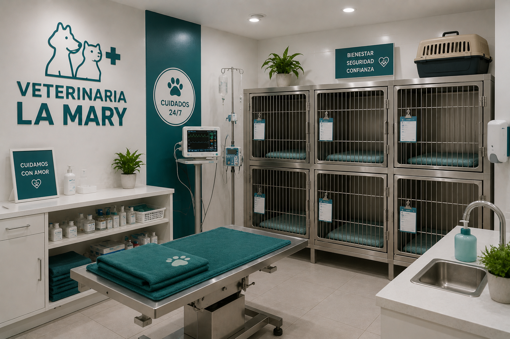
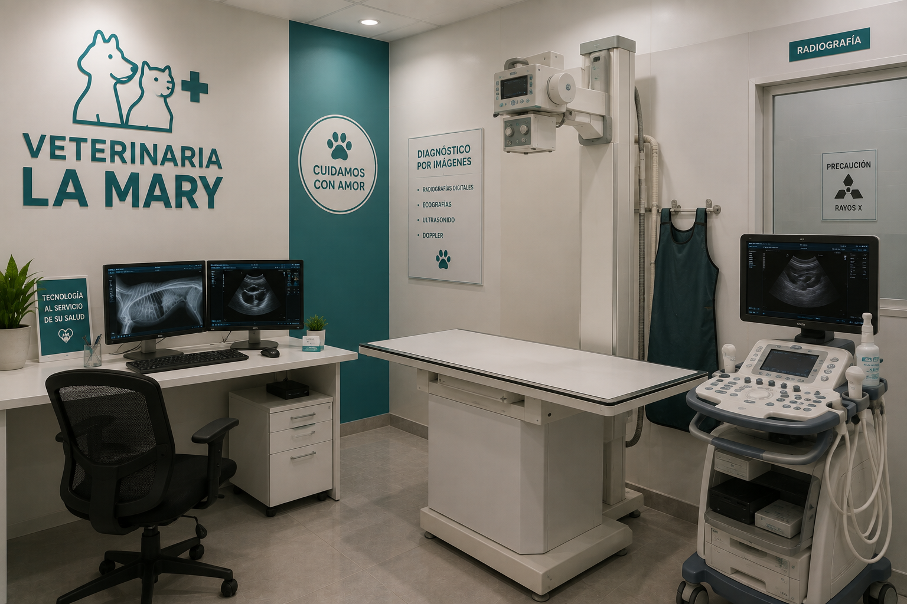

Un proyecto nacido del amor por los animales. Veterinaria La Mary nació como un pequeño proyecto impulsado por el amor y la vocación de cuidar a los animales. Desde nuestros comienzos, nos propusimos crear un lugar donde cada mascota pudiera recibir una atención profesional y, al mismo tiempo, sentirse acompañada y cuidada. Con el paso del tiempo, fuimos creciendo gracias a la confianza de las familias que nos eligieron. Cada paciente y cada historia nos ayudaron a construir la veterinaria que somos hoy. Seguimos trabajando con el mismo compromiso de nuestros comienzos: cuidar a cada mascota como si fuera parte de nuestra propia familia.
Nuestra Historia
Nuestros Valores
Amor por los animales
Trabajamos con dedicación y empatía, entendiendo que cada mascota merece un trato respetuoso y afectuoso.
Profesionalismo
Nos comprometemos a brindar una atención responsable, basada en nuestros conocimientos y experiencia.
Compromiso
Acompañamos a cada familia y buscamos ofrecer siempre la mejor atención posible.
Bienestar animal
Todas nuestras acciones tienen como prioridad la salud y el bienestar de nuestros pacientes.
Mejora continua
Creemos en seguir aprendiendo y actualizándonos para brindar un servicio cada vez mejor.
Nuestra visión
Nuestra visión es convertirnos en una veterinaria reconocida por nuestro compromiso, profesionalismo y amor por los animales. Queremos continuar creciendo, incorporando nuevos conocimientos y herramientas que nos permitan mejorar constantemente la atención de nuestros pacientes. Aspiramos a construir una comunidad donde la prevención, el cuidado responsable y el respeto por los animales sean parte de la vida cotidiana.
Nuestro Equipo
Profesionales comprometidos con el bienestar, la salud y la felicidad de su mascota.
Nuestro equipo está formado por profesionales apasionados por el cuidado animal, preparados para brindar una atención responsable y de calidad. Nos mantenemos en constante actualización mediante congresos y capacitaciones para ofrecer medicina preventiva de vanguardia, diagnósticos precisos y tratamientos eficaces. Creemos firmemente que la empatía y la comunicación clara con los tutores son la base para garantizar una excelente calidad de vida a lo largo de todas las etapas de sus vidas.
Dra. María López
Médica Veterinaria
Especialista en clínica de pequeños animales y comprometida con brindar una atención cercana a cada paciente.
Dr. Juan Martínez
Médico Veterinario
Dedicado a la prevención, diagnóstico y tratamiento de diferentes enfermedades en mascotas.
Lic. Sofía Ramírez
Asistente Veterinaria
Encargada de acompañar a nuestros pacientes durante su atención y colaborar con el equipo en el cuidado diario.
La Clínica
Conocé nuestras instalaciones



